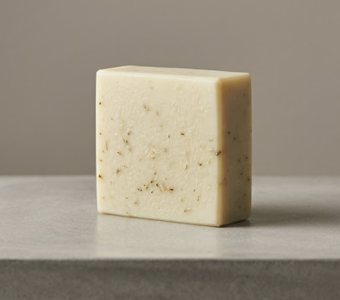
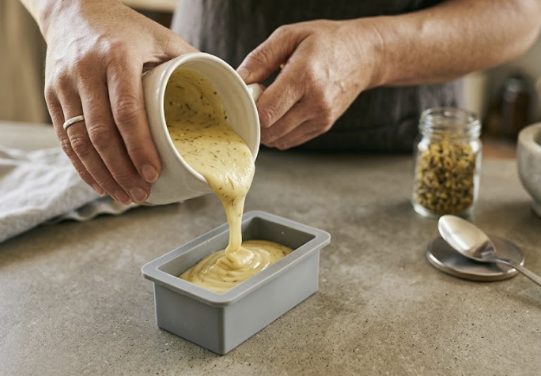

Kūmarahou (also known as "gumdigger's soap") is one of Aotearoa's most loved native plants when it comes to skin care.
Kūmarahou contains natural compounds called saponins. These have natural antibacterial properties that support healing for conditions like eczema, acne, and minor rashes.